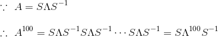

定义
我们首先来看一条公式：

其中S由n个线性无关的特征向量组成，Λ为λ组合成的对角矩阵。这条公式在图像处理中十分有用，举个例子如图片的压缩(具体步奏以后会讲)。但是要注意的一点是，并不是所有的矩阵都能特征分解，所以其存在局限性，后面会讲SVD(奇异值分解)就更显优势，应用范围也更广，不过都是后话了，这节重点还是特征分解。
公式从何来？
我们先假定有一个n*n的矩阵A，其有n个线性无关的特征向量，将其组合成S=[s1,s2,……,sn]（注意s为列向量），那么有：

那两边各右乘S的逆可得：
当然，两边可以各左乘S的逆，那么可得：

而这种叫做将矩阵A对角化。
另外还有一点需要提醒的是，λ值可以重复，但特征向量一定要有n个线性无关才行。
公式的简单应用
已知A有n个线性无关的特征向量，那么A^100等于多少？

由于Λ是对角矩阵，所以100次幂也很好求：
公式的变体
其中A是一种特殊的矩阵——对称矩阵，Q仍然是矩阵A的特征向量组合成的矩阵，但其具有正交性。具有正交性也就意味着Q的逆等于Q的转置，所以有了最终的公式：
当然，这条公式只有当矩阵A是实对称矩阵才永远成立。那什么是实对称矩阵，当A的转置等于A本身时，A称为对称矩阵，当A所有的元素都为实数，那么A就是实对称矩阵。那为什么实对称矩阵A具有这种性质？
首先来看下实对称矩阵的性质一：其所有特征值都是实数，对应的特征向量也都是实向量；
假定有一n*n的矩阵，有：

两边同时取共轭，可得：
什么叫共轭？
一般来说共轭指的是共轭复数，利用维基上的一张图来解释下：
如图中Z和Zbar就是一组共轭复数，就是实部保留不变，虚部变号，实数的共轭复数是其本身：
举例说明：
一般共轭复数满足加减乘除运算：
回到刚刚那个证明上，等式两边同时取转置可得：
一般来说共轭指的是共轭复数，利用维基上的一张图来解释下：
如图中Z和Zbar就是一组共轭复数，就是实部保留不变，虚部变号，实数的共轭复数是其本身：
举例说明：
一般共轭复数满足加减乘除运算：
因为矩阵A是实对称矩阵，所以有：
两边同时右乘x得：
其中：
假设xi的实部是a，虚部是b：
所以有：
因为λ的共轭复数等于本身，所以λ是一个实数。因为λ都是实数，所以(A-λI)的元素都是实数，其(A-λI)x=0的解x也都是实向量，所以其特征向量都是实向量。
知道这个重要的前提后，我们来推导第二条性质，实对称矩阵的特征向量相互正交，也可以说实对称矩阵可以被正交对角化。
假定矩阵A有两个不同的特征值λ和u，其特征向量为x和y：
将Ay=uy等号左右各取转置可得：
因为A为对称矩阵，所以A的转置等于A：
等号两边同时乘以x可得：
所以最后可得x和y正交，拓展开来就是其所有特征向量都相互正交。
综上，利用本节最开始的特征分解公式，对称矩阵的分解就是正交分解，其公式为：
最后再聊点对称矩阵的特殊性质：
1. 对称矩阵可看成是相互正交的投影矩阵的组合。
对于对称矩阵A而言，其正交分解可以继续分解成多项式：

因为特征向量具有正交性，所以向量q的转置与q相乘为1，以1为分母并不会改变等式，这就让多项式变成了多个正交的投影矩阵P的组合。比如其中第一个就是λ1乘以q1的投影矩阵。
2. 对称矩阵主元(pivot)中大于0的个数跟其特征值里大于0的个数是一样的。举个例子，对于矩阵A而言：
将其消元得到两个主元——1和-11：
其中主元正的有1个，值为1，负的有1一个，值为-11。那么其特征值为：
其中λ1>0,λ2<0，跟主元一致。具体的验证方法目前没时间写，以后再看看。
另外还有一点，主元的积就是矩阵A的行列式值，而特征值的乘积刚好也是矩阵A行列式值(证明方法可看番外篇 · 矩阵的迹&行列式值&特征值三者关系)，所以主元的乘积也是特征值的乘积。
3. 任意n*n的实对称矩阵都有n个线性无关的特征向量。具体验证方法以后再补充~
下一章节，实对称矩阵进阶版——正定矩阵。